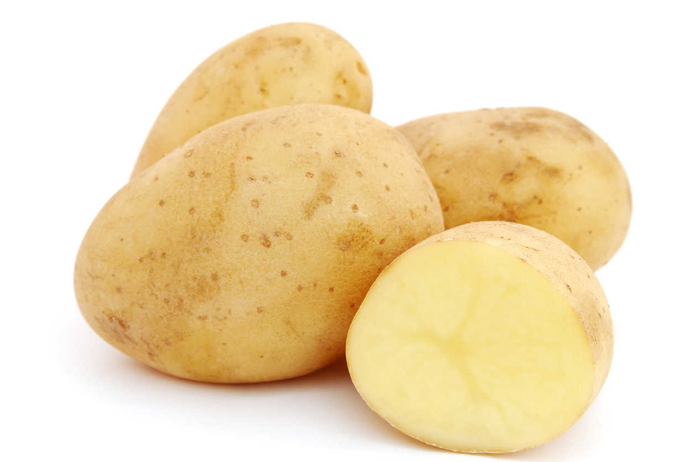

La maravillosa PAPA

Papas 100% orgánicas
Tamaños varían desde 3 in. de largo hasta 6 in.
Cultivadas en Rép. Dominicana
*Para ver imágenes de todas las papas,
pase a la GALERÍA.
Papas 100% orgánicas
Tamaños varían desde 3 in. de largo hasta 6 in.
Cultivadas en Rép. Dominicana
*Para ver imágenes de todas las papas,
pase a la GALERÍA.
Presentando:
Todos podemos ir a la tienda y comprar una lata de esmalte, y hacer que brille nuestra platería hasta el punto en el que podemos ver nuestra reflexión en el mismo. Sin embargo, estos productos químicos pueden ser bastante caro. Introduzca la humilde patata. Todo lo que tiene que hacer es hervir un par de patatas y una vez que estén cocidos, retirarlos y mantener el agua. Coloque los cubiertos en esta agua y dejar en remojo durante veinte minutos a media hora. Se retiran y se limpie de manera adecuada, y se le dejó con flamante cubiertos. Es un método muy eficaz, y se ha utilizado desde hace miles de años, cuando las monedas de plata eran la norma.
El pulido de patata no se limita a los cubiertos, como zapatos se pueden pulir con este vegetal milagrosa también. Es tan simple como cortar una papa por la mitad y frotar directamente sobre el cuero de los zapatos. Casi al instante, usted notará una apariencia opaca a la zapata. Guarde los zapatos a un lado durante unos cinco minutos, y luego usar un cepillo suave o un paño limpio para limpiar los zapatos. Los resultados son absolutamente excepcional. Usted se quedará con un par de zapatos brillantes que cuestan absolutamente nada, aunque no se recomienda comer la papa después.
Las patatas son un método sorprendentemente eficaz de no sólo brillante, sino también eliminar herrumbre de utensilios viejos y otros objetos metálicos. Las patatas contienen un tipo de ácido que se come en el óxido, y lo elimina de cualquier superficie metálica. La mejor manera de utilizar este método es cortar una papa por la mitad y frotar la parte cortada sobre el área oxidada. Dejar actuar durante aproximadamente media hora, y luego usar un exfoliante de alambre para quitar el óxido. Usted debe quedar con utensilios o artículos a estrenar de aspecto y, si no, repetir el proceso de nuevo. Es, literalmente, no cuesta nada, ¿por qué no?
Cualquier persona que ha sufrido la falta de sueño se ha ocupado de los ojos hinchados como consecuencia de ello. Por lo general, confiamos en los nutrientes de un pepino para relajar los ojos y eliminar esas antiestéticas bocanadas. A pesar de que los pepinos funcionan bien, las patatas son un recurso aún mejor. La mejor manera de hacerlo es cortar una patata, colocar las mitades sobre los ojos, y mantenerlos durante unos veinte minutos. Repita este proceso con regularidad, y pronto verá un cambio notable.
Las patatas se han utilizado como fuente de energía para un buen número de invenciones. Tal vez el más famoso, los escolares han utilizado patatas para iluminar una bombilla o un reloj digital en el camino a un fácil A +. Este método funciona porque las patatas contienen una cierta cantidad de energía que puede ser aprovechada mediante el uso de cables para conectar ya sea una bombilla o un reloj para la patata. Es casi actúa como una batería, en realidad capaz de alimentar el dispositivo durante algún tiempo. En definitiva, es algo que probar en casa, tal vez experimentando con una mayor cantidad de patatas y un dispositivo más grande. Puede que no sea capaz de poner en marcha su coche con patatas, pero que sin duda encontrar algo divertido y fascinante que ver con ellos.
Copyright © 2016, Potato Emporium